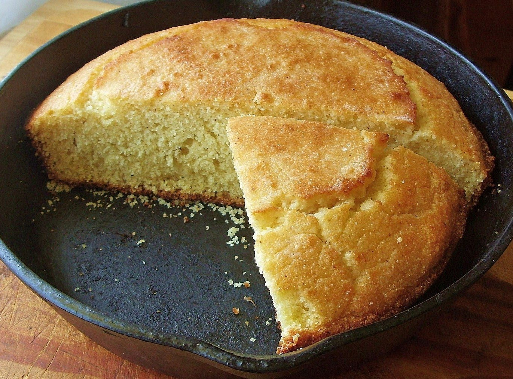

Traditional Southern Cornbread

Description
Traditional Southern cornbread, the perfect accompaniment to lima beans
and other soups or stews.
Ingredients
- 1 cup white or yellow cornmeal
- 1 cup all purpose flour
- 2 large eggs
- 1 Tablespoon baking powder
- Pinch of salt
- 1 cup cultured buttermilk
- Water
Steps
- Preheat oven to 450F
- Add bacon drippings to medium sized iron skillet and place in
oven
- Stir together dry ingredients, then add eggs and buttermilk. Stir
together until just mixed
- Thin cornbread mixture with water to the consistency of pancake
batter
- Remove skillet from oven, quickly pour cornbread mixture into the
skillet and return to the oven
- Bake for 20-25 minutes, until cornbread has risen and is golden brown
on top. A knife inserted into the bread should come out clean when
fully cooked.
- Remove skillet from oven and let rest for a few minutes, then tip
cornbread out onto a plate